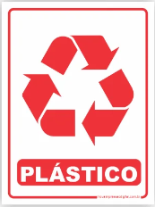
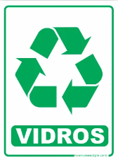
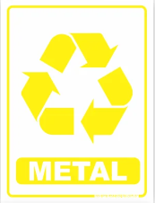
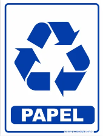
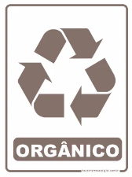
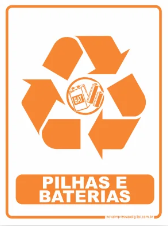
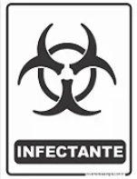
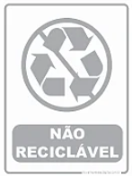

Como funciona a reciclagem no Rio de Janeiro
Instituições, programas e o caminho do lixo reciclável na cidade.
A Comlurb e a gestão de resíduos
A Companhia Municipal de Limpeza Urbana (Comlurb) é a instituição responsável pelo manejo dos resíduos sólidos no município do Rio de Janeiro, abrangendo a coleta, o transporte e a destinação final. Fundada em 1976, a empresa atende a uma população de milhões de habitantes e opera diariamente com o objetivo de manter a cidade limpa.
Após o encerramento das atividades do Aterro Sanitário de Jardim Gramacho, em 2012, um dos maiores depósitos de resíduos da América Latina, os resíduos passaram a ser destinados principalmente ao Centro de Tratamento e Comercialização de Resíduos (CTCR) de Seropédica, em parceria com a concessionária CMR.
Coleta seletiva
A coleta seletiva separa materiais recicláveis do lixo comum já na origem (casas, prédios, escolas). No Rio, o programa é implementado de forma gradual, com cobertura variável entre bairros.
- Coleta porta a porta: caminhões específicos recolhem recicláveis em dias programados.
- Coleta em ecopontos: pontos fixos onde moradores depositam materiais separados.
- Coleta em condomínios e empresas: parcerias com síndicos e gestores ambientais.
Separar corretamente: cores das lixeiras
O sistema de cores facilita a identificação do tipo de resíduo:

PlásticoGarrafas PET, sacolas, embalagens

VidroGarrafas, pote e copos

MetalLatas de alumínio, tampas, arames

Papel e papelãoJornais, revistas, caixas

Resíduos OrgânicosRestos de comida, cascas de frutas

PerigososPilhas e baterias.

InfectanteResíduos de serviços de saúde com risco biológico potencial.

Não Recicláveis:
Papéis sujos, alguns plásticos misturados, vidros especiais e restos de comida
Nota: o padrão de cores pode variar conforme o município. Consulte a Comlurb para orientações atualizadas.
Cooperativas de catadores
As cooperativas e associações de catadores desempenham um papel fundamental na gestão de resíduos e na economia circular. As unidades em questão são responsáveis pela triagem diária de grandes quantidades de materiais, contribuindo para a sustentabilidade urbana e promovendo a inclusão social de numerosas famílias cariocas.
- Coopama (Cooperativa Popular Amigos do Meio Ambiente):Localizada em Maria da Graça (Zona Norte), é uma das maiores da cidade.
- Cooperativas locais: São inúmeras associações em atividade em bairros e feiras de recicláveis.
- O reconhecimento da Política Nacional de Resíduos Sólidos (Lei 12.305/2010):Reconhecimento como Agentes:
- Reconhecimento como Agentes:Reconhecimento como Agentes: A lei define a organização e o empoderamento dos catadores como fundamentais para a gestão de resíduos no país.
- Inclusão na Coleta Seletiva: O Artigo 8º estabelece que os planos de coleta seletiva dos municípios devem priorizar a participação de cooperativas ou outras formas de associação de catadores de materiais recicláveis.
- Prioridade de Financiamento: Os municípios que integram os catadores em suas ações têm prioridade no acesso a recursos federais para o setor de saneamento e resíduos.
- Dispensa de Licitação:A Lei de Licitações permite que as prefeituras contratem essas cooperativas diretamente (sem concorrência pública) para realizar a coleta seletiva, facilitando a geração de renda.
Ecopontos e descarte correto
Os ecopontos espaços públicos ou estruturas de entrega voluntária criados pelas prefeituras para a população descartar gratuitamente resíduos que não vão no lixo comum, como materiais recicláveis, móveis velhos, pequenos entulhos de obras e galhadas. O objetivo é evitar o descarte irregular em ruas e terrenos. A Comlurb mantém ecopontos espalhados pela cidade — consulte o site oficial endereços e horários atualizados.
O que NÃO deve ir para a reciclagem comum
- Papéis e Embalagens que não vão para a Reciclagem
- Papel higiênico e guardanapos usados
- Cupons fiscais e comprovantes de maquininha (papel térmico)
- Embalagens metalizadas (como sacos de salgadinho)
- Papel com verniz, adesivos ou fita crepe colada
- Plásticos e Metais Complexos
- Esponjas de limpeza e isopor muito sujo
- Tubos de pasta de dente e refis metalizados
- Cabos de panela ou plásticos que queimam no fogo (termofixos)
- Esponjas de aço e grampos de grampeado
- Vidros Especiais e Outros Materiais
- Espelhos, cristais e cerâmicas (como pratos e xícaras)
- Vidros de forno (tipo pirex) e lâmpadas
- Pilhas, baterias e eletrônicos quebrados
- Resíduos de banheiro, fraldas e absorventes
Reciclagem e ODS 12
A Meta 12.5 da ODS prevê reduzir substancialmente a geração de resíduos até 2030. A Meta 12.8 complementa essa ação ao garantir que a população tenha informação para adotar práticas sustentáveis — como separar o lixo e usar a coleta seletiva.